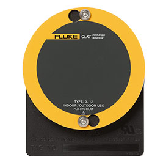
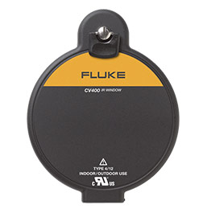

Fluke Infrared Windows
Increase the safety and speed of electrical infrared inspections, increase the safety of your personnel and reduce the risk of arc-flash and electrocution with Fluke ClirVu' IR Windows.
Once you've installed a Fluke infrared window there is no more need to power down or remove panel doors-you may never have to open the panel door again. Inspections are now conducted quickly, easily and more safely than they were before.
Experience the difference Fluke makes in IR Windows
- Fast, easy installation with AutoGround™ design
- Corrosion and UV resistant for challenging outdoor environments
- Torture Tested™ to the highest arc blast test ratings (IP67)
- Maintain panel arc test ratings up to 63kA
- Convenience-quick 1.4 turn access or security key access options
- Available in three convenient sizes

Fluke CV Series Infrared Windows

Fluke CLK Series Infrared Windows
Smarter, faster and safer-with Fluke Infrared Windows